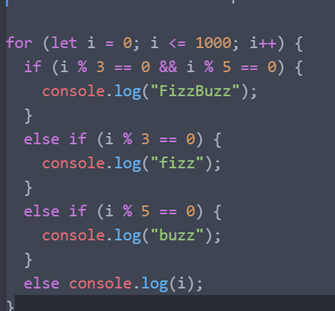

The term Computational Thinking refers to the human approach to understanding complex problems, so that a solution may be designed that could be understood by both and computers. There are four fundamental features of Computational Thinking that help us to tackle these problems.
I will use a practical example to explain Computation Thinking and demonstrate its relevance and importance to future learning on this course and into my future career using an example problem from CMT120.
Write code that prints out the numbers 1 - 1000, but if the number is divisible by 3 it prints ‘fizz’, if the number is divisible by 5 it prints ‘buzz’ and if the number is divisible by 3 and 5 it prints ‘fizzbuzz’
Before trying to solve a large and complex problem it can be useful to break that problem down into smaller and simpler parts. In this example we can identify at least 4 components of the problem statement:
Problems 2 – 4 are very similar in their natural language wording and as we begin to write the code to solve these problem, we recognise that they share a similar pattern.
By focussing only on the relevant important information, we can save ourselves from becoming sidetracked by information we do not need or confused by information we do not understand. Using an else (else console.log(i);) clause to finish the if, else if, else conditional block is a simple method of logging all numbers that are neither divisible by 3 or 5 without considering any other factors.
By decomposing the problem into its components, recognising the pattern that certain problems share and abstracting away from any unimportant details, we can formulate a concise step-by-step instruction to solve the problem.
Computational Thinking has already proved to be a useful technique in solving-problems encountered within this course. Moving forward with the course and into my future career, I am sure to encounter more complex problems which will require a methodical approach. Utilising the four cornerstones of Computational Thinking will allow me to simplify, understand and solve increasingly more complex problems.